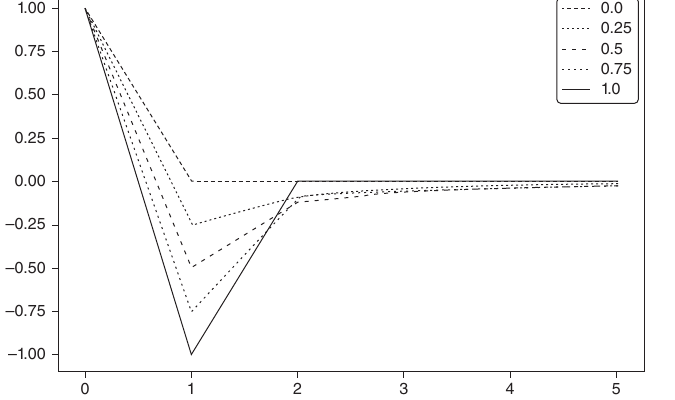
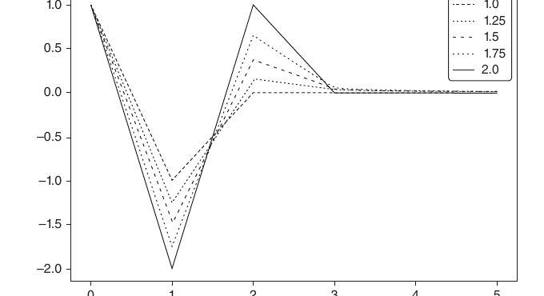
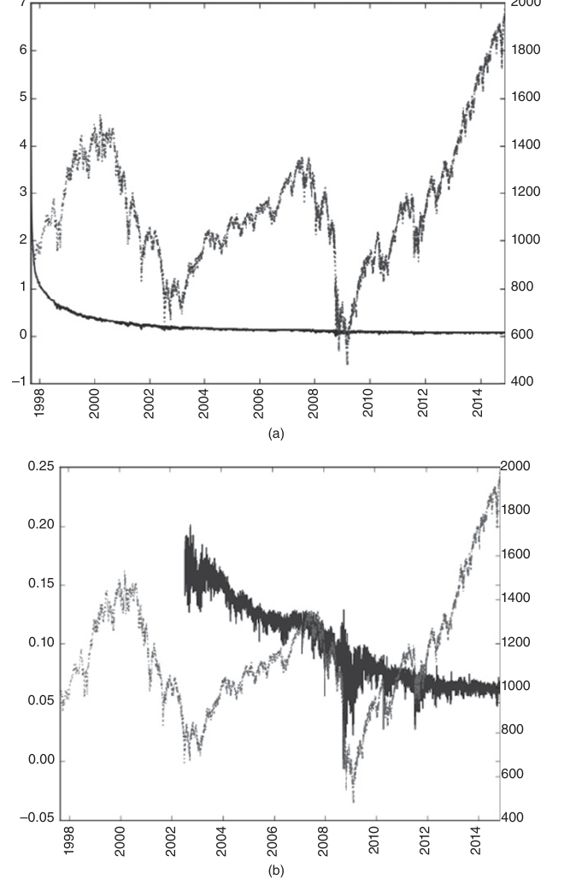
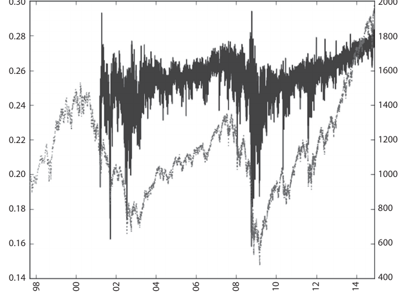
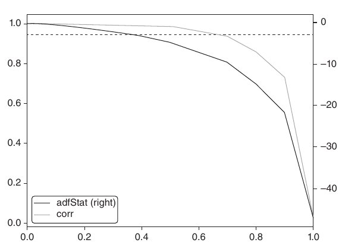

第一部分：数据分析
分数阶差分特征
5.1 为什么需要分数阶差分
众所周知，在套利力量的作用下，金融序列的信噪比通常很低（López de Prado [2015]）。更棘手的是，整数阶差分等常用的平稳化处理会抹去记忆，使本来就微弱的信号进一步减少。价格序列具有记忆性，因为每个值都依赖此前很长一段时间的价格水平。收益率这类经过整数阶差分的序列则不同：它们的记忆有明确截点，超出有限样本窗口的历史会被完全忽略。平稳化处理一旦把数据中的记忆全部清除，统计学家就只能借助复杂的数学方法，从残余信息中设法提取信号。在已经失去记忆的序列上使用这些复杂方法，很容易得到并不存在的规律。本章将介绍一种数据变换：既让数据达到平稳，又尽可能多地保留记忆。
5.2 平稳性与记忆性的两难
非平稳时间序列在金融领域很常见。序列之所以不平稳，是因为它保留了记忆：过去很长一段时间的价格水平会持续影响序列，使其均值随时间移动。为了开展统计推断，研究者需要使用性质不随时间变化的过程，例如价格收益率（即对数价格的变化）、收益率水平的变化或波动率的变化。这些变换能让序列平稳，却也会把原序列的记忆全部清除（Alexander [2001]，第 11 章）。平稳性固然是统计推断的必要条件，但在信号处理中，我们几乎不会希望清除全部记忆，因为模型的预测能力正是建立在这些记忆之上。例如，均衡（平稳）模型必须保留一定记忆，才能判断
价格过程偏离长期期望值有多远，并据此做出预测。矛盾就在这里：收益率平稳，却没有记忆；价格有记忆，却不平稳。于是问题变成：最少要做多少差分，才能在让价格序列平稳的同时，尽可能保留其记忆？为此，我们需要把“收益率”推广为一大类仍保留部分记忆的平稳序列。在这个框架下，收益率只是众多价格变换中的一种，而且多数时候并不是最优选择。协整方法之所以重要，部分原因就在于它能够对有记忆的序列建模。但为什么零阶差分这种特殊情形就一定效果最好？零阶差分和一阶差分同样武断。完全差分与完全不差分之间还有很大空间，可以用分数阶差分来探索，从而构建预测能力更强的机器学习模型。监督学习算法通常要求特征平稳。因为我们要把一个从未见过、尚无标签的新观测映射到一组已有标签的样本上，再据此推断新观测的标签。如果特征不平稳，新观测就无法与大量已知样本有效对应。但平稳也不等于有预测能力：平稳性是机器学习算法取得良好表现的必要条件，却不是充分条件。真正的问题是，平稳性与记忆性之间存在取舍。差分总能让序列变得更平稳，却会同时抹去一部分记忆，反而妨碍机器学习算法实现预测目标。本章将研究一种化解这一矛盾的方法。
5.3 文献回顾
金融时间序列文献几乎无一例外，都以整数阶变换将非平稳序列转为平稳序列为前提（参见 Hamilton [1994]中的例子）。这引出两个问题：（1）为什么一阶整数差分（如计算对数价格收益率时使用的差分）会是最优选择？（2）现有文献如此偏向有效市场假说，是否有一部分原因正是过度差分？把分数阶差分用于时间序列预测分析的想法，至少可以追溯到 Hosking [1981]。该论文允许差分阶数取分数值，从而把一类 ARIMA 过程推广到了更一般的形式。分数阶差分过程具有长期持续性或反持续性，因此比标准 ARIMA 方法具有更强的预测能力。Hosking 在同一篇论文中写道：“除了 Granger（1978）顺带提过一次，此前似乎没有人把分数阶差分与时间序列分析联系起来。”令人意外的是，Hosking 发表论文后，这一主题的研究仍然很少：期刊论文总共只有 8 篇，作者也只有 9 位，分别是 Hosking、Johansen、Nielsen、MacKinnon、Jensen、Jones、Popiel、Cavaliere 和 Taylor。详情参见参考文献。这些论文大多讨论技术问题，例如用于
计算连续随机过程分数阶差分的快速算法（例如 Jensen 和 Nielsen [2014]）。对随机过程做差分，计算成本很高。本章采用一种实用而新颖的替代方案来恢复平稳性：把差分算子从整数阶推广到非整数阶。
5.4 方法
定义滞后算子 \(B\)，并将其作用于实值特征矩阵 \(\{X_t\}\)，其中 \(B^kX_t=X_{t-k}\)对任意整数 \(k\ge0\)。例如，\((1-B)^2=1-2B+B^2\)，其中 \(B^2X_t=X_{t-2}\)，因此有
注意，对于正整数 \(n\)，
对任意实数 \(d\)，对应的二项级数为
在分数阶模型中，指数 \(d\)可以取任意实数，其形式化的二项级数展开如下：
5.4.1 长记忆
下面看看正的非整数实数 \(d\)如何保留记忆性。这个级数可以写成以下点积
其中权重为
对应的数值为

当 \(d\)为正整数时，
此后的记忆会被截断。例如，\(d=1\)用于计算收益率，此时 \(\frac{\prod_{i=0}^{k-1}(d-i)}{k!}=0,\ \forall k>1\)，且 \(\omega=\{1,-1,0,0,\ldots\}\)。
5.4.2 迭代计算
观察权重序列 \(\omega\)可知，对于 \(k=0,\ldots,\infty\)，若取 \(\omega_0=1\)，其余权重可以按下式迭代计算：
图 5.1 展示了计算分数阶差分序列各个值时所用的权重序列。图例给出了生成每条权重序列所采用的 \(d\)值；横轴表示 \(k\)，纵轴表示 \(\omega_k\)。例如，当 \(d=0\)时，非零权重满足 \(\omega_0=1\)，除此之外的权重全为 0。此时差分序列与原序列完全相同。当 \(d=1\)时，非零权重满足 \(\omega_0=1\)且 \(\omega_1=-1\)，除此之外的权重全为 0。这就是标准的一阶整数差分，用于计算对数价格收益率。在上述两个端点之间，\(\omega_0=1\)之后的所有权重都小于 0，但大于 \(-1\)。
图 5.2 展示了以下范围内的权重序列：\(d\in[1,2]\)，步长为 0.1。当 \(d>1\)时，可以看到 \(\omega_1<-1\)且 \(\omega_k>0,\ \forall k\ge2\)。代码清单 5.1 给出了生成这些图的代码。

def getWeights(d,size):
# thres>0 drops insignificant weights
w=[1.]
for k in range(1,size):
w_=-w[-1]/k*(d-k+1)
w.append(w_)
w=np.array(w[::-1]).reshape(-1,1)
return w
#----------------------------------------
def plotWeights(dRange,nPlots,size):
w=pd.DataFrame()
for d in np.linspace(dRange[0],dRange[1],nPlots):
w_=getWeights(d,size=size)
w_=pd.DataFrame(w_,index=range(w_.shape[0])[::-1],columns=[d])
w=w.join(w_,how='outer')
ax=w.plot()
ax.legend(loc='upper left')
mpl.show()
return
#----------------------------------------
if __name__=='__main__':
plotWeights(dRange=[0,1],nPlots=11,size=6)
plotWeights(dRange=[1,2],nPlots=11,size=6)5.4.3 收敛性
下面分析权重如何收敛。由上式可知，当 \(k>d\)时，如果 \(\omega_{k-1}\ne0\)，那么 \(\left|\frac{\omega_k}{\omega_{k-1}}\right|=\left|\frac{d-k+1}{k}\right|<1\)；若上述条件不成立，则 \(\omega_k=0\)。因此，这些权重由绝对值小于 1 的因子不断连乘，最终渐近收敛到 0。此外，当取正数 \(d\)且 \(k<d+1\)时，有 \(\frac{d-k+1}{k}\ge0\)，所以最初几个权重的正负号会交替变化。
当 \(d\)不是整数时，一旦 \(k\ge d+1\)，\(\omega_k\)的符号取决于 \(\operatorname{int}[d]\)是否为偶数：若为偶数则是负数，否则是正数。综上，\(\lim_{k\to\infty}\omega_k=0^-\)当 \(\operatorname{int}[d]\)为偶数；而 \(\lim_{k\to\infty}\omega_k=0^+\)当 \(\operatorname{int}[d]\)为奇数。在特殊情形 \(d\in(0,1)\)下，这意味着 \(-1<\omega_k<0,\ \forall k>0\)。权重符号的这种交替变化，是让 \(\{\widetilde X_t\}_{t=1,\ldots,T}\)在长期记忆逐渐衰减或相互抵消后达到平稳所必需的。
5.5 实现
本节讨论分数阶差分的两种实现方式：标准的“扩展窗口”法，以及本书提出的“固定宽度窗口分数阶差分”（FFD）法。
5.5.1 扩展窗口
下面说明怎样在实践中对有限时间序列做分数阶差分。假设一个时间序列包含 \(T\)个实数观测值，记为 \(\{X_t\}_{t=1,\ldots,T}\)。由于数据长度有限，分数阶差分值 \(\widetilde X_T\)无法使用无限长的权重序列来计算。例如，最后一个点 \(\widetilde X_T\)会用到权重 \(\{\omega_k\}_{k=0,\ldots,T-1}\)，且 \(\widetilde X_{T-l}\)会用到权重 \(\{\omega_k\}_{k=0,\ldots,T-l-1}\)。这意味着，序列前部与尾部的点保留的记忆量并不相同。
对每个 \(l\)，可以用下式计算相对权重损失：
给定容忍水平 \(\tau\in[0,1]\)，可以求出 \(l^*\)，使得 \(\lambda_{l^*}\le\tau\)且 \(\lambda_{l^*+1}>\tau\)。这个值 \(l^*\)对应最前面的这些结果 \(\{\widetilde X_t\}_{t=1,\ldots,l^*}\)，其权重损失超出了可接受阈值，即 \(\lambda_t>\tau\) （例如，\(\tau=0.01\)）。根据前面的讨论可知，\(\lambda_{l^*}\)取决于权重序列 \(\{\omega_k\}\)的收敛速度，而收敛速度又取决于 \(d\in[0,1]\)。对于 \(d=1\)，\(\omega_k=0,\ \forall k>1\)，且 \(\lambda_l=0,\ \forall l>1\)，因此只需舍弃 \(\widetilde X_1\)。随着 \(d\to0^+\)，\(l^*\)增大，为把权重损失控制在容忍范围内，需要舍弃的序列开头部分 \(\{\widetilde X_t\}_{t=1,\ldots,l^*}\)也会变长，才能保证 \(\lambda_{l^*}\le\tau\)。
图 5.3 展示了由每 1E4 笔成交构成的 E-mini 标普 500 期货数据条序列。该序列经过前向展期调整和分数阶差分处理，上图参数为（\(d=.4,\ \tau=1\)），下图参数为（\(d=.4,\ \tau=1E-2\)）。两幅图都出现了向下漂移，这是因为窗口不断扩展时，早期观测值上持续叠加了负权重。不控制权重损失时，向下漂移极其严重，图中几乎只能看到这条趋势。控制权重损失后，漂移有所减弱，但依然很明显，因为 \(\{\widetilde X_t\}_{t=l^*+1,\ldots,T}\)中的各个值仍是用扩展窗口计算的。改用固定宽度窗口可以解决这个问题，具体实现见代码清单 5.2。

def fracDiff(series,d,thres=.01):
'''
Increasing width window, with treatment of NaNs
Note 1: For thres=1, nothing is skipped.
Note 2: d can be any positive fractional, not necessarily bounded [0,1].
'''
#1) Compute weights for the longest series
w=getWeights(d,series.shape[0])
#2) Determine initial calcs to be skipped based on weight-loss threshold
w_=np.cumsum(abs(w))
w_/=w_[-1]
skip=w_[w_>thres].shape[0]
#3) Apply weights to values
df={}
for name in series.columns:
seriesF,df_=series[[name]].fillna(method='ffill').dropna(),pd.Series()
for iloc in range(skip,seriesF.shape[0]):
loc=seriesF.index[iloc]
if not np.isfinite(series.loc[loc,name]):
continue # exclude NAs
df_[loc]=np.dot(w[-(iloc+1):,:].T,seriesF.loc[:loc])[0,0]
df[name]=df_.copy(deep=True)
df=pd.concat(df,axis=1)
return df5.5.2 固定宽度窗口分数阶差分
另一种做法是用固定宽度窗口计算分数阶差分：当权重的绝对值（\(|\omega_k|\)）低于给定阈值（\(\tau\)）后，就舍弃后续权重。这等价于找到第一个 \(l^*\)，使得 \(|\omega_{l^*}|\ge\tau\)且 \(|\omega_{l^*+1}|\le\tau\)，并定义一个新变量 \(\widetilde\omega_k\)：
且 \(\widetilde X_t=\sum_{k=0}^{l^*}\widetilde\omega_k X_{t-k}\)，其中 \(t=T-l^*+1,\ldots,T\)。图 5.4 展示了由每 1E4 笔成交构成的 E-mini 标普 500 期货数据条序列。该序列经过前向展期调整和分数阶差分处理（\(d=.4,\ \tau=1E-5\)）。这种方法的优势在于，估计 \(\{\widetilde X_t\}_{t=l^*,\ldots,T}\)中的每个值时都使用同一组权重，因此不会因扩展窗口不断加入权重而产生向下漂移。结果如预期，是水平项与噪声的混合，并不带漂移。记忆性会带来偏度和超额峰度，所以这个分布不再是高斯分布，但它是平稳的。代码清单 5.3 给出了具体实现。

def fracDiff_FFD(series,d,thres=1e-5):
'''
Constant width window (new solution)
Note 1: thres determines the cut-off weight for the window
Note 2: d can be any positive fractional, not necessarily bounded [0,1].
'''
#1) Compute weights for the longest series
w=getWeights_FFD(d,thres)
width=len(w)-1
#2) Apply weights to values
df={}
for name in series.columns:
seriesF,df_=series[[name]].fillna(method='ffill').dropna(),pd.Series()
for iloc1 in range(width,seriesF.shape[0]):
loc0,loc1=seriesF.index[iloc1-width],seriesF.index[iloc1]
if not np.isfinite(series.loc[loc1,name]):
continue # exclude NAs
df_[loc1]=np.dot(w.T,seriesF.loc[loc0:loc1])[0,0]
df[name]=df_.copy(deep=True)
df=pd.concat(df,axis=1)
return df5.6 在最大限度保留记忆的前提下实现平稳
考虑序列 \(\{X_t\}_{t=1,\ldots,T}\)。对该序列使用固定宽度窗口分数阶差分（FFD）方法，可以求出最小的差分阶数 \(d^*\)，使分数阶差分后的序列 \(\{\widetilde X_t\}_{t=l^*,\ldots,T}\)达到平稳。这个系数 \(d^*\)衡量了为了实现平稳必须清除多少记忆。如果 \(\{X_t\}_{t=l^*,\ldots,T}\)本身已经平稳，那么 \(d^*=0\)。如果 \(\{X_t\}_{t=l^*,\ldots,T}\)含有单位根，那么 \(d^*<1\)。如果 \(\{X_t\}_{t=l^*,\ldots,T}\)呈爆炸性增长（如泡沫），那么 \(d^*>1\)。特别值得关注的是 \(0<d^*\ll1\)这种情形，此时原序列只有轻微的非平稳。它虽需要差分，但完整的一阶整数差分会清除过多记忆和预测能力。
图 5.5 直观展示了这一思路。右侧纵轴给出了 E-mini 标普 500 期货对数价格的 ADF 统计量；这条连续合约序列使用 ETF 技巧进行前向展期调整。

按照 ETF 技巧（见第 2 章），该序列被降采样为日频，时间范围一直追溯到合约开始交易之时。图 5.5 的横轴表示 \(d\)，即生成待检验序列时使用的差分阶数。原序列的 ADF 统计量为 -0.3387，收益率序列为 -46.9114。在 95% 置信水平下，检验临界值为 -2.8623。ADF 统计量在接近 \(d=0.35\)时越过该临界值。左侧纵轴表示原序列（\(d=0\)）与采用不同 \(d\)值得到的差分序列之间的相关系数。当 \(d=0.35\)时，相关系数仍高达 0.995。这说明本章方法在没有牺牲太多记忆的情况下成功实现了平稳。相比之下，原序列与收益率序列的相关系数只有 0.03，可见标准整数阶差分几乎清除了序列的全部记忆。
几乎所有金融论文都用整数阶差分 \(d=1\gg0.35\)来恢复平稳。这意味着大多数研究都对序列做了过度差分：为了满足标准计量经济学假设，它们清除的记忆远多于实际需要。代码清单 5.4 给出了生成上述结果的代码。
def plotMinFFD():
from statsmodels.tsa.stattools import adfuller
path,instName='./','ES1_Index_Method12'
out=pd.DataFrame(columns=['adfStat','pVal','lags','nObs','95% conf','corr'])
df0=pd.read_csv(path+instName+'.csv',index_col=0,parse_dates=True)
for d in np.linspace(0,1,11):
df1=np.log(df0[['Close']]).resample('1D').last() # downcast to daily obs
df2=fracDiff_FFD(df1,d,thres=.01)
corr=np.corrcoef(df1.loc[df2.index,'Close'],df2['Close'])[0,1]
df2=adfuller(df2['Close'],maxlag=1,regression='c',autolag=None)
out.loc[d]=list(df2[:4])+[df2[4]['5%']]+[corr] # with critical value
out.to_csv(path+instName+'_testMinFFD.csv')
out[['adfStat','corr']].plot(secondary_y='adfStat')
mpl.axhline(out['95% conf'].mean(),linewidth=1,color='r',linestyle='dotted')
mpl.savefig(path+instName+'_testMinFFD.png')
returnE-mini 期货的结果绝非特例。表 5.1 汇总了全球 87 种流动性最高的期货合约应用 \(\operatorname{FFD}(d)\)后，在不同 \(d\)取值下得到的 ADF 统计量。对所有合约而言，计算收益率所采用的标准 \(d=1\)都意味着过度差分。事实上，所有合约都能在 \(d<0.6\)时达到平稳。有些合约甚至完全不需要差分，例如橙汁（JO1 Comdty）和活牛（LC1 Comdty）。
| 合约 | 0 | 0.1 | 0.2 | 0.3 | 0.4 | 0.5 | 0.6 | 0.7 | 0.8 | 0.9 | 1 |
|---|---|---|---|---|---|---|---|---|---|---|---|
| AD1 Curncy | −1.7253 | −1.8665 | −2.2801 | −2.9743 | −3.9590 | −5.4450 | −7.7387 | −10.3412 | −15.7255 | −22.5170 | −43.8281 |
| BO1 Comdty | −0.7039 | −1.0021 | −1.5848 | −2.4038 | −3.4284 | −4.8916 | −7.0604 | −9.5089 | −14.4065 | −20.4393 | −38.0683 |
| BP1 Curncy | −1.0573 | −1.4963 | −2.3223 | −3.4641 | −4.8976 | −6.9157 | −9.8833 | −13.1575 | −19.4238 | −26.6320 | −43.3284 |
| BTS1 Comdty | −1.7987 | −2.1428 | −2.7600 | −3.7019 | −4.8522 | −6.2412 | −7.8115 | −9.4645 | −11.0334 | −12.4470 | −13.6410 |
| BZ1 Index | −1.6569 | −1.8766 | −2.3948 | −3.2145 | −4.2821 | −5.9431 | −8.3329 | −10.9046 | −15.7006 | −20.7224 | −29.9510 |
| C 1 Comdty | −1.7870 | −2.1273 | −2.9539 | −4.1642 | −5.7307 | −7.9577 | −11.1798 | −14.6946 | −20.9925 | −27.6602 | −39.3576 |
| CC1 Comdty | −2.3743 | −2.9503 | −4.1694 | −5.8997 | −8.0868 | −10.9871 | −14.8206 | −18.6154 | −24.1738 | −29.0285 | −34.8580 |
| CD1 Curncy | −1.6304 | −2.0557 | −2.7284 | −3.8380 | −5.2341 | −7.3172 | −10.3738 | −13.8263 | −20.2897 | −27.6242 | −43.6794 |
| CF1 Index | −1.5539 | −1.9387 | −2.7421 | −3.9235 | −5.5085 | −7.7585 | −11.0571 | −14.6829 | −21.4877 | −28.9810 | −44.5059 |
| CL1 Comdty | −0.3795 | −0.7164 | −1.3359 | −2.2018 | −3.2603 | −4.7499 | −6.9504 | −9.4531 | −14.4936 | −20.8392 | −41.1169 |
| CN1 Comdty | −0.8798 | −0.8711 | −1.1020 | −1.4626 | −1.9732 | −2.7508 | −3.9217 | −5.2944 | −8.4257 | −12.7300 | −42.1411 |
| CO1 Comdty | −0.5124 | −0.8468 | −1.4247 | −2.2402 | −3.2566 | −4.7022 | −6.8601 | −9.2836 | −14.1511 | −20.2313 | −39.2207 |
| CT1 Comdty | −1.7604 | −2.0728 | −2.7529 | −3.7853 | −5.1397 | −7.1123 | −10.0137 | −13.1851 | −19.0603 | −25.4513 | −37.5703 |
| DM1 Index | −0.1929 | −0.5718 | −1.2414 | −2.1127 | −3.1765 | −4.6695 | −6.8852 | −9.4219 | −14.6726 | −21.5411 | −49.2663 |
| DU1 Comdty | −0.3365 | −0.4572 | −0.7647 | −1.1447 | −1.6132 | −2.2759 | −3.3389 | −4.5689 | −7.2101 | −10.9025 | −42.9012 |
| DX1 Curncy | −1.5768 | −1.9458 | −2.7358 | −3.8423 | −5.3101 | −7.3507 | −10.3569 | −13.6451 | −19.5832 | −25.8907 | −37.2623 |
| EC1 Comdty | −0.2727 | −0.6650 | −1.3359 | −2.2112 | −3.3112 | −4.8320 | −7.0777 | −9.6299 | −14.8258 | −21.4634 | −44.6452 |
| EC1 Curncy | −1.4733 | −1.9344 | −2.8507 | −4.1588 | −5.8240 | −8.1834 | −11.6278 | −15.4095 | −22.4317 | −30.1482 | −45.6373 |
| ED1 Comdty | −0.4084 | −0.5350 | −0.7948 | −1.1772 | −1.6633 | −2.3818 | −3.4601 | −4.7041 | −7.4373 | −11.3175 | −46.4487 |
| EE1 Curncy | −1.2100 | −1.6378 | −2.4216 | −3.5470 | −4.9821 | −7.0166 | −9.9962 | −13.2920 | −19.5047 | −26.5158 | −41.4672 |
| EO1 Comdty | −0.7903 | −0.8917 | −1.0551 | −1.3465 | −1.7302 | −2.3500 | −3.3068 | −4.5136 | −7.0157 | −10.6463 | −45.2100 |
| EO1 Index | −0.6561 | −1.0567 | −1.7409 | −2.6774 | −3.8543 | −5.5096 | −7.9133 | −10.5674 | −15.6442 | −21.3066 | −35.1397 |
| ER1 Comdty | −0.1970 | −0.3442 | −0.6334 | −1.0363 | −1.5327 | −2.2378 | −3.2819 | −4.4647 | −7.1031 | −10.7389 | −40.0407 |
| ES1 Index | −0.3387 | −0.7206 | −1.3324 | −2.2252 | −3.2733 | −4.7976 | −7.0436 | −9.6095 | −14.8624 | −21.6177 | −46.9114 |
| FA1 Index | −0.5292 | −0.8526 | −1.4250 | −2.2359 | −3.2500 | −4.6902 | −6.8272 | −9.2410 | −14.1664 | −20.3733 | −41.9705 |
| FC1 Comdty | −1.8846 | −2.1853 | −2.8808 | −3.8546 | −5.1483 | −7.0226 | −9.6889 | −12.5679 | −17.8160 | −23.0530 | −31.6503 |
| FV1 Comdty | −0.7257 | −0.8515 | −1.0596 | −1.4304 | −1.8312 | −2.5302 | −3.6296 | −4.9499 | −7.8292 | −12.0467 | −49.1508 |
| G 1 Comdty | 0.2326 | 0.0026 | −0.4686 | −1.0590 | −1.7453 | −2.6761 | −4.0336 | −5.5624 | −8.8575 | −13.3277 | −42.9177 |
| GC1 Comdty | −2.2221 | −2.3544 | −2.7467 | −3.4140 | −4.4861 | −6.0632 | −8.4803 | −11.2152 | −16.7111 | −23.1750 | −39.0715 |
| GX1 Index | −1.5418 | −1.7749 | −2.4666 | −3.4417 | −4.7321 | −6.6155 | −9.3667 | −12.5240 | −18.6291 | −25.8116 | −43.3610 |
| HG1 Comdty | −1.7372 | −2.1495 | −2.8323 | −3.9090 | −5.3257 | −7.3805 | −10.4121 | −13.7669 | −19.8902 | −26.5819 | −39.3267 |
| HI1 Index | −1.8289 | −2.0432 | −2.6203 | −3.5233 | −4.7514 | −6.5743 | −9.2733 | −12.3722 | −18.5308 | −25.9762 | −45.3396 |
| HO1 Comdty | −1.6024 | −1.9941 | −2.6619 | −3.7131 | −5.1772 | −7.2468 | −10.3326 | −13.6745 | −19.9728 | −26.9772 | −40.9824 |
| IB1 Index | −2.3912 | −2.8254 | −3.5813 | −4.8774 | −6.5884 | −9.0665 | −12.7381 | −16.6706 | −23.6752 | −30.7986 | −43.0687 |
| IK1 Comdty | −1.7373 | −2.3000 | −2.7764 | −3.7101 | −4.8686 | −6.3504 | −8.2195 | −9.8636 | −11.7882 | −13.3983 | −14.8391 |
| IR1 Comdty | −2.0622 | −2.4188 | −3.1736 | −4.3178 | −5.8119 | −7.9816 | −11.2102 | −14.7956 | −21.6158 | −29.4555 | −46.2683 |
| JA1 Comdty | −2.4701 | −2.7292 | −3.3925 | −4.4658 | −5.9236 | −8.0270 | −11.2082 | −14.7198 | −21.2681 | −28.4380 | −42.1937 |
| JB1 Comdty | −0.2081 | −0.4319 | −0.8490 | −1.4289 | −2.1160 | −3.0932 | −4.5740 | −6.3061 | −9.9454 | −15.0151 | −47.6037 |
| JE1 Curncy | −0.9268 | −1.2078 | −1.7565 | −2.5398 | −3.5545 | −5.0270 | −7.2096 | −9.6808 | −14.6271 | −20.7168 | −37.6954 |
| JG1 Comdty | −1.7468 | −1.8071 | −2.0654 | −2.5447 | −3.2237 | −4.3418 | −6.0690 | −8.0537 | −12.3908 | −18.1881 | −44.2884 |
| JO1 Comdty | −3.0052 | −3.3099 | −4.2639 | −5.7291 | −7.5686 | −10.1683 | −13.7068 | −17.3054 | −22.7853 | −27.7011 | −33.4658 |
| JY1 Curncy | −1.2616 | −1.5891 | −2.2042 | −3.1407 | −4.3715 | −6.1600 | −8.8261 | −11.8449 | −17.8275 | −25.0700 | −44.8394 |
| KC1 Comdty | −0.7786 | −1.1172 | −1.7723 | −2.7185 | −3.8875 | −5.5651 | −8.0217 | −10.7422 | −15.9423 | −21.8651 | −35.3354 |
| L 1 Comdty | −0.0805 | −0.2228 | −0.6144 | −1.0751 | −1.6335 | −2.4186 | −3.5676 | −4.8749 | −7.7528 | −11.7669 | −44.0349 |
在 95% 置信水平下，ADF 检验的临界值为 -2.8623。所有对数价格序列都能在 \(d<0.6\)时达到平稳，而且绝大多数序列达到平稳时满足 \(d<0.3\)。
5.7 小结
总的来说，大多数计量经济学分析遵循以下两种范式之一：
- Box-Jenkins 范式：收益率平稳，但没有记忆。
- Engle-Granger 范式：对数价格有记忆，但不平稳。协整可以让回归适用于非平稳序列，从而保留记忆。不过，可形成协整关系的变量数量有限，而且协整向量出了名地不稳定。
相比之下，本章介绍的 FFD 方法表明，实现平稳并不需要牺牲全部记忆。对于机器学习预测，也不必依赖协整这种处理方式。掌握 FFD 后，就能在保留记忆（也就是预测能力）的同时实现平稳。在实践中，我建议按以下步骤变换特征：第一，计算时间序列的累积和，以确保该序列确实需要某一阶差分。第二，对 d ∈ [0, 1] 的多个取值计算 FFD(d) 序列。第三，找出使 FFD(d) 序列 ADF 检验 p 值低于 5% 的最小 d。第四，把这个 FFD(d) 序列用作预测特征。
参考文献
- Alexander, C. (2001): Market Models, 1st edition. John Wiley & Sons.
- Hamilton, J. (1994): Time Series Analysis, 1st ed. Princeton University Press.
- Hosking, J. (1981): “Fractional differencing.” Biometrika, Vol. 68, No. 1, pp. 165–176.
- Jensen, A. and M. Nielsen (2014): “A fast fractional difference algorithm.” Journal of Time Series Analysis, Vol. 35, No. 5, pp. 428–436.
- López de Prado, M. (2015): “The Future of Empirical Finance.” Journal of Portfolio Management, Vol. 41, No. 4, pp. 140–144. Available at https://ssrn.com/abstract=2609734.
参考书目
- Cavaliere, G., M. Nielsen, and A. Taylor (2017): “Quasi-maximum likelihood estimation and bootstrap inference in fractional time series models with heteroskedasticity of unknown form.” Journal of Econometrics, Vol. 198, No. 1, pp. 165–188.
- Johansen, S. and M. Nielsen (2012): “A necessary moment condition for the fractional functional central limit theorem.” Econometric Theory, Vol. 28, No. 3, pp. 671–679.
- Johansen, S. and M. Nielsen (2012): “Likelihood inference for a fractionally cointegrated vector autoregressive model.” Econometrica, Vol. 80, No. 6, pp. 2267–2732.
- Johansen, S. and M. Nielsen (2016): “The role of initial values in conditional sum-of-squares estimation of nonstationary fractional time series models.” Econometric Theory, Vol. 32, No. 5, pp. 1095–1139.
- Jones, M., M. Nielsen and M. Popiel (2015): “A fractionally cointegrated VAR analysis of economic voting and political support.” Canadian Journal of Economics, Vol. 47, No. 4, pp. 1078–1130.
- Mackinnon, J. and M. Nielsen, M. (2014): “Numerical distribution functions of fractional unit root and cointegration tests.” Journal of Applied Econometrics, Vol. 29, No. 1, pp. 161–171.